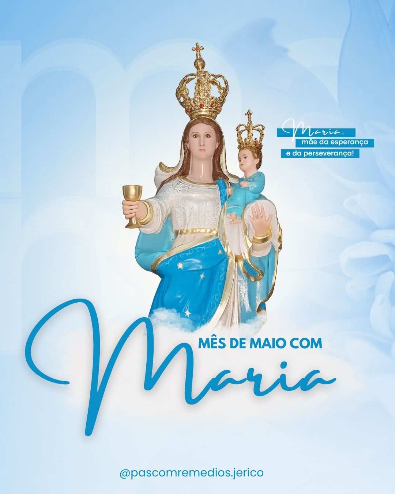

31
Dias de Celebração
+500
Fiéis Participantes
1
Coroação Solene
- Terço diário às 19h na Igreja Matriz
- Meditações marianas com o pároco
- Procissão luminosa toda sexta-feira
- Adoração ao Santíssimo nas quartas-feiras
- Coroação solene de Nossa Senhora no dia 31
- teste123
Todas as celebrações são abertas à comunidade e não exigem inscrição prévia. Venha participar!
Momentos especiais registrados durante o Mês de Maio
Galeria de Fotos


Confira as celebrações especiais ao longo do mês
Programação do Evento
Missa solene de abertura do Mês de Maio com benção especial do Padre e consagração da paróquia a Nossa Senhora.
Local: Igreja Matriz
Horário: 19h00
Público: Toda a comunidade
Rezamos o terço com meditações sobre os mistérios da vida de Maria, conduzidos por diferentes grupos pastorais.
Local: Igreja Matriz
Horário: 19h00
Público: Toda a comunidade
Hora de adoração eucarística com cânticos marianos e oração pela intercessão de Nossa Senhora.
Local: Igreja Matriz
Horário: 19h00
Público: Toda a comunidade
Procissão pelas ruas centrais de Jericó com velas e cânticos, encerrando na Igreja Matriz com a Salve Rainha.
Local: Saída: Praça Central
Horário: 19h00
Público: Toda a comunidade
Grande celebração de encerramento com Missa solene e coroação da imagem de Nossa Senhora dos Remédios.
Local: Igreja Matriz
Horário: 19h00
Público: Toda a comunidade